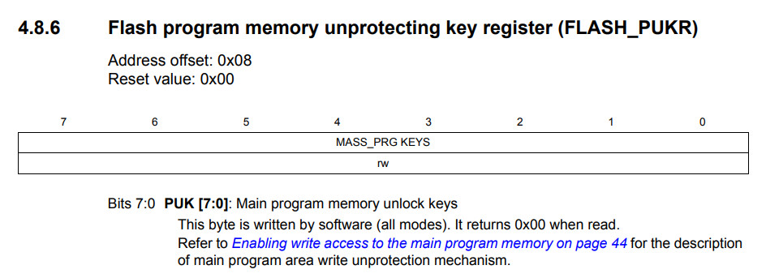

參考資訊：
https://community.st.com/s/question/0D50X00009XkYDFSA3/eeprom-readwrite
暫存器


.equ PD_ODR, 0x500f
.equ PD_IDR, 0x5010
.equ PD_DDR, 0x5011
.equ PD_CR1, 0x5012
.equ PD_CR2, 0x5013
.equ UART1_DR, 0x5231
.equ UART1_BRR1, 0x5232
.equ UART1_BRR2, 0x5233
.equ UART1_CR2, 0x5235
.equ FLASH_IAPSR, 0x505f
.equ FLASH_PUKR, 0x5062
.area data
.area sseg
.area home
int main
.area cseg
main:
mov PD_DDR, #0x20
mov PD_CR1, #0x20
mov PD_CR2, #0x20
; 9600bps
mov UART1_BRR2, #0x00
mov UART1_BRR1, #0x0d
mov UART1_CR2, #0x08
mov FLASH_PUKR, #0x56
mov FLASH_PUKR, #0xae
; flash write
ld a, #0x55
ld 0x9000, a
loop:
; flash read
ld a, 0x9000
ld UART1_DR, a
ldw x, #30000
d0:
decw x
jrne d0
jp loop
完成